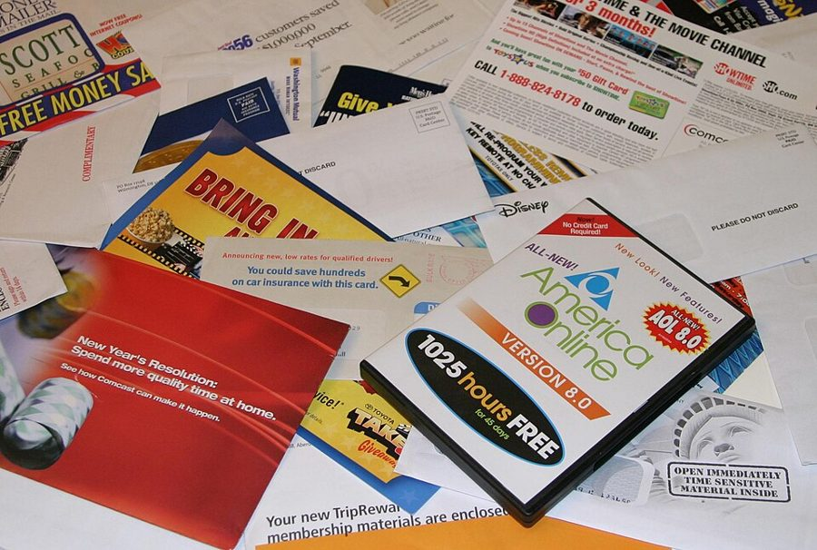
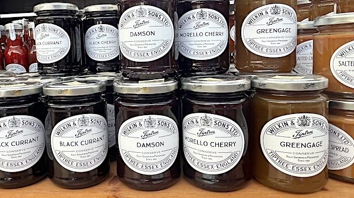

gather force
… continues to gather force today …
势头越来越大
上一章结尾问：既然最后要靠试验说了算，何不直接做试验？这一页讲商业界怎样真这么做了：信用卡公司给几万户人家寄不同颜色的信封，赌场给随机挑出的熟客寄优惠，网站一年做上万次试验，作者自己也从「找规律」改行做试验软件。然后作者转身泼冷水：有了随机试验还不够。读的时候抓两条线：作者在这一章既是讲述者又是当事人；一次做对的试验，为什么还撑不起一条通用的规则。

第 10 章用便利店改名的例子说明，回归分析定不了因果，最后一段问出「何不直接做个试验」（第 10 章第 70 段）。这一章开头第 5 段明说接的就是这一问，问这句话的人就是导言第 1 段那位合伙人。第 7 章讲医学怎样接受随机试验，这一章讲商业怎样接受，两边的对照作者到本章末尾第 71 段才摆出来。这一页的后半段又回到第 8 章的推广难题，第 12 章讲社会政策时还会用到这里的两条方法论。
第 25 段作者从一项元分析推出「减少品种通常让销量下降」，这比元分析本身说得更远；后来的研究认为选择过载在某些条件下确实存在。读这段时把它当成作者的判断，见「对照今天」。
一家公司能便宜地做上千次随机试验，是不是就能一路试出正确的决策？
读的时候带着这几个问题。不用先找答案，读完回来对照「检查一下理解」。
§1 前三段是一段很快的史前史：从古代粮商到 Fisher 的施肥试验，再到工厂和产品试销。第 4 段起换成作者的老东家 SPA，接着是三家公司的案例，一家比一家试得多：信用卡、赌场、互联网。第 10 段一转，说很多生意没法拿几万个顾客试，只能拿几十家店。第 11 段起是作者自己的故事，最后一段落在「必要但不充分」，这是全章的总纲。§2 先用一段说清商业试验的目的，然后用八段拆果酱试验，再从它提炼出两条方法论；第 29–32 段用改名的例子讲「一轮轮试」，第 33 段突然给出一张方法的可靠度排序，最后一句为下半页留了门。
作者落在哪：能试的地方，随机试验是最可靠的办法，商业界也正在把它做成日常。但在原因纷杂的环境里，一次试验给的只是一时一地的答案，要多地点、长时间、一轮接一轮地试，再拿实际推行的结果来核对。
这一页是原书第 11 章的前两节，粗体是本站给的节名，下面是原书这一节第一段开头的几个词，在 Kindle 里搜它就能跳过去（原书的小标题也在目录里）。每节标了档：「先读」不读就跟不上全书主线，「有空」好看但跳过不丢线。读完打个勾。
先把这一页用到、作者默认你懂的几个概念讲一遍。讲的是概念本身，作者拿它推出什么，读原书时自己看。前面讲过的随机分组、内部效度和外部效度、荟萃分析、隐藏条件、因果密度、模式发现，点进去看。
把顾客、门店或网页访客随机分成两组，一组照旧（A），一组换新做法（B），比较两组的结果，比如回应率、利润、点击率。道理和医学的随机对照试验一样：抽签让两组除了 A 和 B 以外大致相同，差别就能算在新做法头上。不同在单位：医学里是病人，商业里可以是一户人家、一家门店，甚至一整个城市。单位越多、越便宜，试验越好做；网站一天有几百万访客，所以大公司一年能做上万次。程序员熟悉的灰度发布，是先把新版本给一小部分人，不一定随机，也不一定留着对照组来比；A/B 测试两样都要。书里没用「A/B 测试」这个词，作者说 test、experiment 或 RFT。
在这一页：第 5 段的蓝信封和白信封、第 8 段的周二酒店优惠、第 9 段网页上广告放左边还是右边，都是它；第 10 段讲单位少时为什么难做。
它回答的是：两组的差别会不会只是运气？做法是先假设新做法完全没用（叫零假设），再算：要是真的没用，光靠随机起伏，测出这么大或更大差别的概率有多大，这个概率叫 p 值。p 值小于事先定的门槛（习惯上是 0.05），就说差别「统计显著」。三件事最容易弄混。一，显著不等于效果大：样本够大，很小的差别也显著。二，显著不等于一定是真的：门槛 0.05 意味着没用的做法大约二十次里有一次会碰巧过线，试的点子一多，过线的里面就混着不少运气。三，不显著不等于没效果：样本小，真效果也可能测不出来。程序员的类比：基准测试快了 3%，先要问每次跑的自然波动有多大。
在这一页：书里一直默认读者懂，从没解释。第 22–24 段果酱试验一共只卖出 35 瓶、只在一家店做了十小时，就是「运气占多少」的问题；下面的模拟器专门演它。
作者用这个词指一轮接一轮地试。第一轮先估一个平均效果，同时看效果在哪些门店、哪些顾客身上大，生出「在什么条件下有效」的猜测；第二轮专门检验这些猜测，再生出更细的猜测；如此往下。每一轮的结论都是暂时的，最后要看它能不能预测下一轮试验和真正推行后的结果。这和科学里的重复验证相通，只是在商业里做得更快、更便宜。程序员的类比是排查一个时有时无的故障：先缩小范围，再在小范围里加日志，一轮轮逼近，修完还要盯着线上看会不会复发。业界今天常说的「测试与学习」（test and learn），说的大致是同一套做法。
在这一页：第 29 段用便利店改名的例子讲一轮轮怎样走，第 30–32 段说规律本身还会变，所以推行以后还要接着量。
不靠抽签分组，但设法找一个可比的对照组来比的研究设计。这个词由美国心理学家 Donald Campbell 推开，他和 Julian Stanley 1963 年的一篇长文把各种设计排了个谱，后来单独印成小书。商业里常见的样子：公司挑了 50 家店先换新装修，再从没换的店里找 50 家规模、地段相近的当对照，比较两组前后的变化。它比单纯找规律强，因为有对照、看的是变化；比随机试验弱，因为哪些店先换是人挑的，挑的理由可能本身就影响销量，也就是选择偏差。用自然发生的「准随机」机会做因果推断的一派，见自然实验。
在这一页：第 33 段的可靠度排序里，它排在随机试验之下、找规律和合并回归之上。书里没解释这个词。
先猜：一家公司一年试 100 个新点子，其中只有 10 个真有用（每个能让销量多涨 2%），其余 90 个毫无作用。每个点子在每组 30 家店里做一次规范的随机试验，测得的提升「统计显著」就宣布成功。宣布成功的点子里，有几成其实没用？它们测得的提升，比真实的大还是小？再点「试一年」验证。
每年 100 个点子各做一次随机试验。「好点子占多少」是 100 个里真有用的比例，有用的都能让销量多涨 2%，没用的是 0；「每组几家店」是试验组和对照组各有几家；「显著性门槛」越严，越难过线；「复试」选了以后，过线的点子要换一批新的门店再试一次，两次都过才算成功。先直接点「试一年」，再点「再试 10 年」让数字稳下来。
需要浏览器打开脚本才能运行。
图例：图上每个点是今年的一个点子，横轴是试验测得的销量提升（初试）。灰点是其实没用的点子，蓝点是真有用的点子（做试验的人看不到颜色，模拟器知道）。浅色底的区域是「过了门槛」，落在里面的点子宣布成功；选了复试时，复试没过的点画成淡色。下面四个数都是到目前为止所有年份合起来算的：平均每年宣布成功几个；宣布成功的里面其实没用的占几成；宣布成功的点子测得的平均提升和它们真实的平均提升（选了复试时，换成初试过线的点子在初试和复试里各测得多少）；真有用的点子最后被认出来的比例。
这个模拟器的数字（好点子的效果 2%、每家店销量的随机起伏、每年 100 个点子）都是本站编的，只为看清道理，不是哪家公司的数据。「统计显著」「赢家被高估」也是本站补的角度：书里只说果酱的结果暗示「测量可能有问题」（第 23 段）、要靠复现（第 25 段）。模拟器里同一个点子在哪家店都一样有效，作者更看重的另一个原因（效果随地点、时间变，第 27–30 段）这里没有演，见第 8 章的模拟器。
按在书里出现的顺序排，标题前是节号。只讲到读懂这一页需要的程度。
SPA（Strategic Planning Associates）是作者 1987 年进的战略咨询公司（第 10 章第 18–19 段），他做了约十年咨询。Rich Fairbank 和 Nigel Morris 是那里的顾问，1988 年说动弗吉尼亚州的 Signet Bank 让他们做信用卡业务，1994 年分拆出来单独上市，改名 Capital One。美国信用卡公司的主要获客办法是往人家里寄「预先核准」的邀约信，一封信对一户人家，拿哪一户进试验组可以抽签，回不回信、开卡以后赚不赚钱都记得清清楚楚，所以特别适合做随机试验。书里说它 2000 年据报每年做 6 万多次测试，2011 年值约 500 亿美元；按当年的股价算，它 2011 年的股票市值在 170 亿美元上下，书里的数可能另有算法。
Harrah’s 是美国的连锁赌场集团，2010 年改名 Caesars Entertainment。Gary Loveman 在哈佛商学院教了九年书，1998 年去 Harrah’s 当营运总监，2003 年起当首席执行官。他靠会员卡 Total Rewards 记下顾客在哪里、玩什么、花多少，再用对照组试各种优惠。书里那句「不设对照组会丢饭碗」出自斯坦福商学院 2003 年的一个案例。作者拿它说明，试验从金融业传到了别的行业。
第 9 段说，Google 自称 2009 年做了约 12000 次随机试验，约一成带来了业务上的改动。书后注释说这个数出自 Google 首席经济学家 Hal Varian 2011 年在《经济学人》上的文章。在网站上做试验几乎不花钱：同一时刻把访客随机分流到两个版本，几天就有结果。微软做在线试验的 Ron Kohavi 2012 年的演讲里引的就是这本书的这个数。今天的规模见「对照今天」。
Applied Predictive Technologies 是作者 1999 年和几个朋友办起来的软件公司，起初想用「找规律」的分析帮零售商赚钱，第一年左右没找到方向，后来被客户拉去分析试验，才转做设计和测量试验的软件（第 11–13 段）。它的主打产品叫 Test & Learn。书里说到 2011 年，美国最大的零售、酒店、餐饮和零售银行里约三到四成在用它（第 14 段），这是作者的说法。2015 年万事达卡（Mastercard）以 6 亿美元收购了 APT。所以读这一章要记住：作者在讲一个他亲手参与、并且从中获利的行业。导言第 23 段说的「几个朋友办起的软件公司」也是它，第 14 章还会再讲它。

心理学家 Sheena Iyengar 和 Mark Lepper 2000 年发表的论文。两位研究助手扮成店员，在一家超市里摆试吃摊，每小时轮换一次，一会儿摆 6 种果酱，一会儿摆 24 种，停下来的人都拿到一张一美元的优惠券。书里给的数字：在 24 种的摊前停下的人更多（145 对 104），但用券买的只有 4 人，6 种那边有 31 人。论文里还有一个课堂作文的试验。社会理论学者 Barry Schwartz 2004 年的畅销书《选择的悖论》（The Paradox of Choice）把它当作「选择多了未必好」的证据，这个结论后来常被叫作选择过载（choice overload）。
Benjamin Scheibehenne、Rainer Greifeneder 和 Peter Todd 2010 年在《消费者研究杂志》（Journal of Consumer Research）上发表的荟萃分析，收了 50 个已发表和未发表的试验、63 组条件、共 5036 人，结论是选项多少的平均效果「几乎为零」，但各试验之间差别很大。作者在第 25 段用的就是它。他说其中以消费量为结果的试验显示品种多往往买得多；再往前一步的「减少品种通常让销量下降」是他自己的推论，后面还加了一句他在商业试验里见到的情况。
Steven Pinker 是哈佛的心理学家，以写给大众的书出名。第 28 段引的那句玩笑出自他 2008 年在《纽约时报杂志》上的长文《道德本能》（The Moral Instinct）。它说的是心理学一个老问题：很多试验的受试者是给点报酬就来填问卷的大学生，结论却写成「大多数人」。两年后，Joseph Henrich 等人发表了一篇有名的论文，把这类受试者叫作 WEIRD（西方的、受过教育的、工业化的、富裕的、民主国家的人），指出他们在许多心理学测量上并不代表全人类。
按节排，每节前面是分节地图里的节名。标着「每个字都认识」的，是熟词生义、习语和反话，最容易读错。灰色的那几个字是原句里的位置，在 Kindle 里搜它就能找到。
in an environment I came to call causally dense, experiments were necessary but not sufficient for rapid progress.— §1 第 16 段。本站译：在我后来称为「因果密度高」的环境里，要想快速进步，试验必要，但不充分。
这句话是第 11 章的总纲，也是作者自己十年的结论，前面还有半句「我一次又一次地碰上这个现实」。口气是下判断，但有两层限定：只在因果密度高的环境里，而且说的是「快速进步」。前半句的 necessary 很重：作者刚刚讲完商业界怎样把试验做成日常，没有它不行。后半句的 not sufficient 是这一页后半段和下半页的全部内容：要多轮试、要推广、要战略、要别的方法。别读成「试验不够好」，作者是在说「光有试验不够」。
the best we can do is to find our way through a dark room by bumping our shins on the furniture.— §2 第 29 段。本站译：我们最多只能在一间黑屋子里摸索着走，一次次磕着小腿，记住家具在哪。
这是在反讽卖分析方法的人爱说的 shed light（照亮）：作者说，在因果密度高的地方，没有哪种方法能把屋子照亮，试验也不能。试验的好处只是磕得实在：每次碰到的家具是真的。下一段他又加了一句更泄气的：看不见的小妖精还在挪家具。读的时候注意，这个比喻是在给「一轮轮试」辩护，不是在说试验没用。
读完这一页的几节再看。下面是作者在这几节里的论点，由本站按论点重新组织，不按原书的顺序；每条下面是依据所在的段落，拿不准就回书里那几段再读一遍。
作者说，信息技术革命让试验从零星的试销、目录封面测试，扩到多数靠直销的金融业务、赌场的营销和网上的生意，因为这些地方能便宜地拿几万个顾客做单位。但很多生意只有几千家店，现实中只能拿几十家来试，难得多。
§1 第 3、5–10 段作者讲自己从相信找规律转向试验：试验快刀斩乱麻，让他确知一个项目在试过的地方有没有用；可要把结果推广出去做决策，仍然棘手。十年读下来，他的结论是：在因果密度高的环境里，试验对快速进步必要但不充分。他还说，试验革命很可能会长期留在商业里。
§1 第 11–12、15–16 段果酱试验只在一家店做了十个小时，按小时分组，一共卖出 35 瓶，却被一路推广成关于整个社会的结论。作者说结果「至少有意思」，检验它的最好办法是复现；五十个试验合起来看，平均效果几乎为零，以购买量为结果的那些试验里品种多往往买得多。他据此说减少品种通常让销量下降，并说这和他见过的多数商业试验一致。
§2 第 18–19、22–25、28 段作者提出两条：单个试验要尽量覆盖不同的背景条件，一家店几乎做不出可靠的结论；检验因果结论的最终标准，是能不能预测以后的试验。有用的规则往往带着一串条件，事先列不全，只能一轮轮试出来；规律本身还会变，所以推行以后还要接着量。
§2 第 27–32 段作者说，用后来的试验去检验各种方法的预测，一贯得出同一个排序：单纯找规律最差，对变化做合并回归次之，准实验再次之，随机试验最可靠；称职的专家大致介于找规律和试验之间，这是他给的经验法则。但别的方法仍有重要的用处。
§2 第 33–34 段合起来：作者先用一串成功的案例说明试验在商业里管用，再用果酱试验说明一次试验能误导多少人。两头合起来就是第 16 段那句：必要，但不充分。缺的那一半是什么，下半页接着讲。
这本书 2012 年出版。下面挑出这一页里能被后来的研究检验的说法，分「书里 / 当时 / 今天」三栏，并给一个结论。结论判的是标题里「书里的说法：」后面那一句。全书的这一节汇总在对照今天。
读完作者的论点，再看它站不站得住。每一块摆出三样：主流怎么看，作者怎么看，本站的评论。最后一句是本站对这一页的总体判断。
主流看法：商业随机试验值钱，今天有独立于作者的证据：Kohavi 等人公开了微软、必应等公司的大量试验经验，《哈佛商业评论》上也有系统的讨论。但同一批文献也说，多数试验不成功，成功的提升往往很小。
作者的看法：他说用 APT 平台的公司一贯测得利润大增（第 14 段），可靠度排序也是「这类检验一贯得出」的（第 33 段）。
本站的评论：这一章的很多证据来自作者自己的公司，而他靠卖试验软件为生：第 14 段的「利润大增」、第 33 段的排序，书里都没有给出可查的数据。APT 是真的，后来被高价收购；大方向也和后来公开的在线试验文献一致。读的时候把「在我见过的试验里」当作一家公司、一个当事人的经验，不当成公认的事实。也要说一句公道话：作者讲自己当初「还不确定」（第 11 段），没把自己写成先知。
主流看法：Iyengar 和 Lepper 的论文是这个领域引用最多的研究之一，后来的重做时有时无。两项荟萃分析的结论不同：一项说平均几乎为零，一项说在特定条件下存在。研究者大多同意：选择过载不是普遍规律，也不是完全不存在。
作者的看法：一家店、十小时、按小时分组，样本太小；研究者本人谨慎，是宣传者把结论层层放大（第 23–25、28 段）。
本站的评论：前半截很有力：对样本和推广的批评站得住，他也分清了研究者和宣传者。但他自己在第 25 段走得也有点远：荟萃分析说的是平均接近零、差别很大，他却从其中以购买量为结果的那部分试验推出「减少品种通常让销量下降」，还说这和他见过的多数商业试验一致。这有点像他批评别人的那种「从一组结果推出通用规则」。另外，第 23 段「涨 900%」是拿两边的购买率相比；按买走的瓶数是 31 对 4，约 7.75 倍。这是归谬法，数字差一点不影响他的意思。
主流看法：统计学界常说的两个原因是：同时试很多点子，光靠运气就会有一些「显著」（多重比较）；过了门槛的结果往往偏高（赢家诅咒）。John Ioannidis 2005 年的名文说，在真假设少、样本小的领域，发表的显著结果很多是假的。
作者的看法：要多地点、多时段、一轮轮试，因为因果密度高，效果随条件变，规律还会被小妖精挪走（第 27–30 段）。
本站的评论：作者开的药方对，但他讲的主要是推广这一个理由。还有一个理由他没讲：当大多数点子没用时，一次「显著」本身就很不可靠，上面的模拟器演的就是它。两个理由指向同一个结论：别信单次的漂亮结果，要重复。他在下半页第 59 段说新点子大多没用，正好让这第二个理由更重。
本站的总体看法：这是全书和今天对得最上的一页：A/B 测试的普及、心理学的复现危机，都印证了他「必要但不充分」和「要一轮轮试」的判断。要打折扣的是证据的来源：很多数字出自他自己的公司。最值得带走的是第 28 段：一个结论的价值，看它能不能预测下一次试验。
先在心里答，再点开。答错的那题，回书里把对应那一节再读一遍。
它们的单位是一户人家或一个访客，一次能拿几万个来抽签，又便宜又能直接量结果。便利店连锁的单位是门店，几千家店里现实中只能拿几十家来试，样本小、花费大。
斩开的是找规律时理不清的一团因果：试验让他确知一个项目在试过的地方有没有效果。剩下的是推广：把这些结果变成别处、以后的决策，仍然很难。
它只在一家店做了十个小时，按小时分组，一共只卖出 35 瓶，那几个小时碰巧来了什么人都可能影响结果。要推广，得看很多次、很多地方的试验；五十个试验合起来，平均效果几乎为零。
一是试验要覆盖足够多的地点和足够长的时间；二是要检验这条规则能不能预测以后的试验和真正推行的结果，因为规则往往带着条件，而且明年的竞争和经济可能已经变了。
从差到好：单纯找规律、对变化做合并回归、准实验、随机试验。称职的专家大致比找规律的模型强、比随机试验弱，作者说这是一条经验法则。
没用的 190 个里，大约 190÷40≈5 个会碰巧过线，加上 10 个真的，假的约占三分之一。真有用的还常常测不出来，那样假的占比会更高。
想一想：你见过的「我们做了 A/B 测试，新版本显著更好」，后来全面上线以后，效果还有那么大吗？如果没有，你觉得是因为运气、因为试验时的条件和上线后不一样，还是别的原因？
读过又忘了，从这里想起来。挑的是这一页最值得记住的故事、人和说法，不按原书顺序；每条后面是节号，想细看就回书里那一节。全书各页的这一节都收在全书回顾。
一句话：在原因纷杂的商业里，随机试验必要但不充分：一次试验只说明一时一地，要多地点、长时间、一轮轮地试，再拿实际推行来核对。
别争了，各寄五万户随机挑的人家，看哪边赚得多。Capital One 把整个信用卡生意拆成这样一个个小试验。
§1赌场老板 Loveman 把「必须有对照组」和不许骚扰、不许偷东西摆在一起，听着更像赌城而不是哈佛。
§11999 年他办软件公司，本想靠找规律赚钱，第一年碰壁，被客户拉去分析试验，从此改信试验。十年后他的结论：必要但不充分。
§1一家店、两个周六、十个小时，6 种果酱的摊卖出 31 瓶，24 种的卖出 4 瓶，被一路推成「选择多了对社会不好」。五十个试验合起来，平均效果几乎为零。
§2试验不能照亮屋子，只能一次次磕着小腿记住家具在哪；看不见的小妖精还在挪家具。所以要一轮接一轮地试。
§2